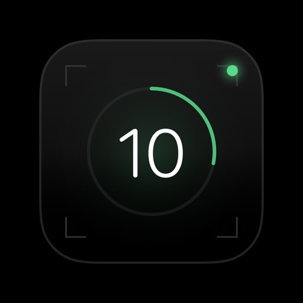
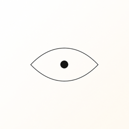

The most important effect of AI is easy to miss, because it is not about intelligence. It is about cost.
For a long time, software followed a simple rule. You built for the largest, loudest, richest users first. Everyone else waited. Accessibility was a later phase. Privacy was a later phase. Tools for people who would never be a "growth segment" were a later phase, which usually meant never.
That rule was not cruelty. It was arithmetic. If it takes a large team and a large budget to ship, you cannot afford to serve a community that does not show up in a pitch deck. The neglected users were not uninteresting. They were unprofitable to notice.
AI changes the arithmetic. A small lab can now try ideas that used to require a platform company. That sounds like a productivity story. It is actually a power story.
Adoption is wide. Care is still narrow.
McKinsey's latest global survey on AI is useful because it is boring in the right way. By 2025, 88 percent of organizations said they regularly use AI in at least one business function, up from 78 percent a year earlier and 72 percent in early 2024. Healthcare respondents reported 91 percent. The technology is no longer exotic.
The more honest number sits underneath. Only about a third of organizations have begun to scale AI across the enterprise. Most are still experimenting. High performers, the ones reporting material impact, are a thin slice: about 6 percent.
Organizations using AI in at least one function
Source: McKinsey Global Survey on the state of AI, 2024 and 2025. Scaling figure is the share that have begun scaling beyond pilots. McKinsey / QuantumBlack
People read this as a failure of enterprise transformation. I read it as a map of where the interesting work still lives. If most of the world is still in the experiment phase, then the experiments that matter are the ones aimed at users nobody else is optimizing for.
Healthcare is a good example of the split. McKinsey finds high reported use, and also finds that much of it sits in marketing, knowledge management, and IT, not at the edge where a patient actually lives. Impact industries adopt tools. They do not automatically adopt care.
The gap is not a feature request. It is a population.
WHO estimates that 1.3 billion people live with disabilities. WHO and UNICEF, in the Global Report on Assistive Technology, estimate that more than 2.5 billion people need one or more assistive products, heading toward 3.5 billion by 2050. Access is not evenly distributed. In some low-income settings it is around 3 percent. In some high-income settings it is around 90 percent.
Need versus access in assistive technology
Sources: WHO fact sheet on disability; WHO and UNICEF, Global Report on Assistive Technology (2022). WHO
You cannot close a gap that large with a handful of firms that treat accessibility as compliance. You close it by multiplying the number of people who are allowed to build. GitHub's accessibility program puts the point plainly: about 1.3 billion people should be able to benefit from technology and contribute to making it. Open source is not a side quest in that story. It is how custom tools get made when the default product will not fit.
A market of 2.5 billion people is not a niche. It is a failure of attention.
The same pattern shows up outside disability. Private thinking. Short, sustainable health. Local answers that do not require you to upload your life. These are not small problems. They are problems that do not concentrate neatly into a single enterprise budget line, so they get skipped.
More builders is how power moves
When few people can build, power is sticky. The companies that already have distribution decide which users exist. They can delay a feature for years and nothing happens, because there is nowhere else to go.
When many people can build, power has to move. Users can leave. A fork can appear. A two-person lab can ship an on-device vision app without asking a cloud vendor for permission to look at the world. That is not a metaphor. It is the difference between a capability that lives on someone else's servers and a capability that lives in your pocket.
Decentralization is often discussed as a protocol. It is more useful to discuss it as a headcount. If only large institutions can make software, then large institutions hold the defaults. If lots of independent builders can make software, defaults become optional. Power is not destroyed. It is made portable.
This is why on-device work matters more than it looks. If your questions, your notes, or your camera feed have to leave the building to be useful, then usefulness is leased. Privacy-first software is not a moral garnish. It is a way of keeping the user as the locus of control.
Open source is what extra builders do with their surplus
There is a naive version of this argument that says AI will replace open source. The empirical picture points the other way. GitHub's Octoverse 2024 reported more than 5.2 billion contributions to more than 518 million projects, and nearly a billion contributions to public and open source repositories. The developer base had already crossed 100 million in 2023 and kept climbing.
Public building at scale, 2024
Source: GitHub Octoverse 2024. Developer community surpassed 100 million in 2023 and continued to grow. GitHub Blog
Why does this follow from cheaper building? Because the bottleneck used to be the first version. Once the first version is cheap, sharing it is the rational move. You publish a library. Someone in another city forks it for a language you do not speak. A screen reader project that would have died as a weekend prototype becomes infrastructure.
Open source is how neglected communities stop being customers of a single vendor and start being participants. If the tool is inspectable, it can be adapted. If it can be adapted, power cannot sit still.
What this looks like in our work
Camou Labs is a small place to test this thesis in public. We ship apps for moments that are easy to dismiss and hard to live without. Every one of them is privacy first. No data is shared. That is not a slogan we added later. It is the point of making the work local.
Compass Local AI is private help. Clear answers on your device, including when you are off the network. The unfashionable user here is anyone who should not have to trade a question for a training set.
Flow Pad is for capturing thinking privately. Speak a thought, keep it, find it later. Notes are some of the most intimate data a person produces. They should not be a cloud product by default.
Ten Fitness is ten minutes to move and ten minutes to meditate. Health software usually optimizes for people who already identify as athletes. Most people have a gap in the day, not a lifestyle brand.
Personal Eyes is built for accessibility. Point the phone, listen, and get a description of what is in front of you, with vision kept on the device. This is the WHO gap, made small enough to hold.


None of these apps needed to exist for AI to look impressive in a keynote. They needed to exist because the people they serve were not going to be a round in someone else's roadmap. That is the whole idea. Emerging technology is only interesting if it shows up in ordinary life.
The test
If this wave only makes the already-served slightly faster, we will have used a historic drop in the cost of building to reproduce the old map of attention. The better outcome is quieter. More people ship. Power becomes harder to hoard. Open source gets thicker. Communities that were treated as edge cases get tools that feel like they were made on purpose.
The test is not how novel the model is. The test is whether someone who was previously ignored can now do something they could not do last year, without handing over their data to get there.
That is the work. Everything else is commentary.